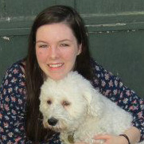
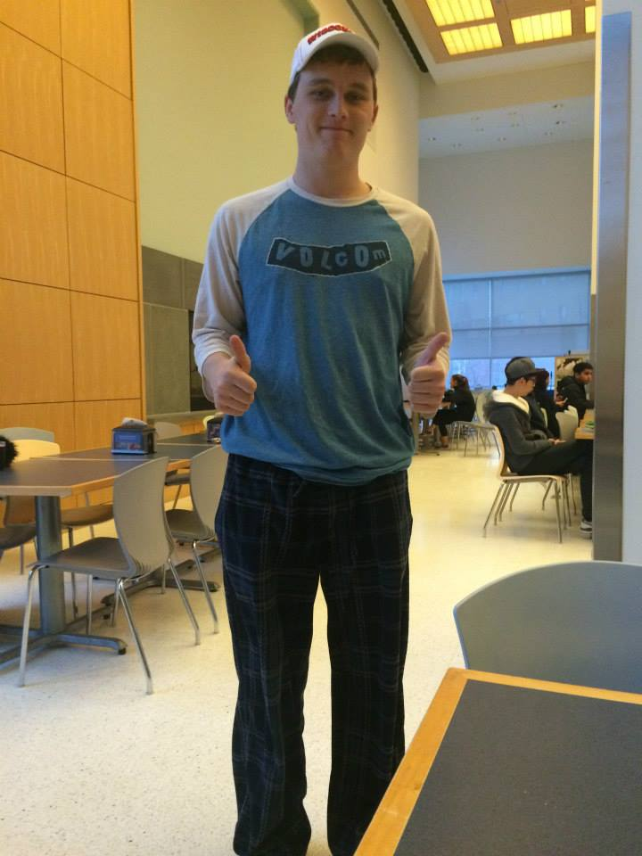

Meet the Team
Our team members are awesome.
Seriously, we're just great people.
Brenna Manning
Brenna is a sophomore, majoring in electrical and computer engineering at Olin. She had a lot of fun learning about how the cryptography standard is implemented, and how it relates to the rest of the course. Computer architecture has taught her so much, including the power of Verilog, and the value of implementing things on hardware. When Brenna is not encrypting a secret message, she may be found rehearsing for FWOP, Olin's theatre group.
Meg McCauley
Meg is a junior majoring in electrical and computer engineering. This was her first introduction to cryptography and she learned a ton! When she first started learning about computer architecture, she thought it was all and gates and truth tables. As the semester comes to a close, she has learned so much more. The Verilog learning curve may be steep, but once you get it, you've got it. When Meg is not encrypting secret messages, she can be found curled up in a cozy chair reading a good book (or napping).
Griffin Tschurwald
Griffin is a Junior at Olin who loves building cool stuff and doing fun things. He once built a stock trading algorithm that was worse at picking stocks than flipping a coin.
Ziyu (Selina) Wang
Selina is a software engineer in training and a fashion designer/stylist in practice. She is passionate and creative. She had so much fun cracking the secret code with AES and has learned a ton along the way. Computer Architecture has changed the way she looks at CPUs and high-level programming languages. When Selina is not decrypting a secret message, she may be found cuddling with her dog Rambo.